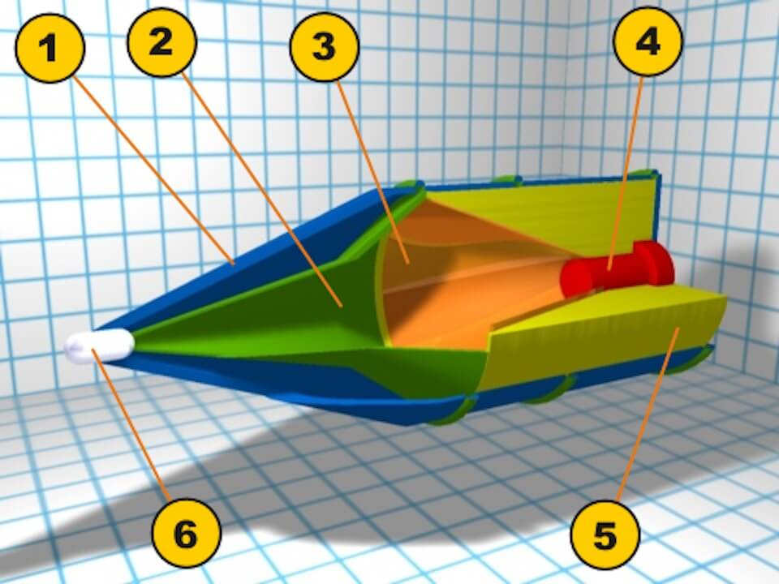
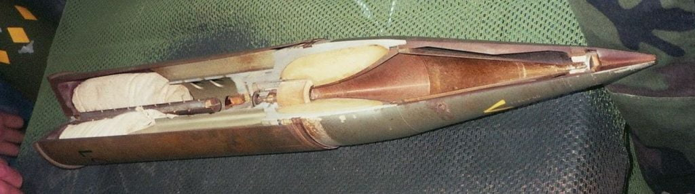
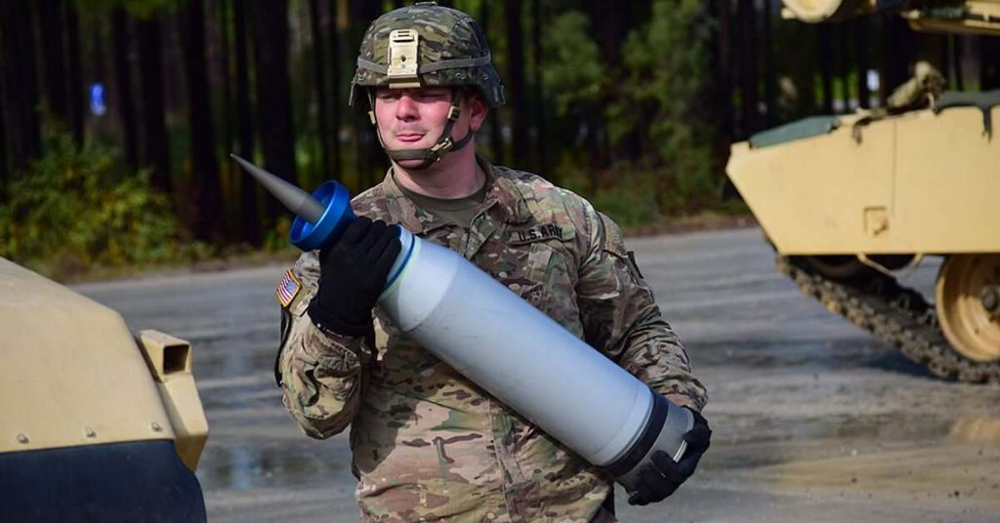

ဒီ Shape charge ပုံသွင်းယမ်း ဆိုတာ တကယ်တော့ သိပ်တော့ ထူးဆန်းလှတာမျိုး မဟုတ်ပါဘူး။ သာမန် ခွင်းကျည်တွေမှာ ယမ်းကို ထိပ်ဖူးအပြည့်ထည့်သွင်းထားလေ့ ရှိပါတယ်။ အဓိကကတော့ ပေါက်ကွဲတဲ့ အခါ ပေါက်ကွဲအား ပြင်ထန်အောင် ဖြစ်ပါတယ်။ ဒါပေမယ့် ပုံသွင်းယမ်း မှာတော့ ယမ်းကို အပြည့်မထည့်ပဲ ကတော့ပုံ ထည့်ထားပါတယ်။ ကတော့ရဲ့ အရှေ့ပိုင်းကိုတော့ ဟောင်းလောင်း ချန်ထားတာပါ။ ဒီလို လုပ်ခြင်းအားဖြင့် သံချပ်ကာ တွေကို ဖောက်အား ပိုကောင်းလို့ ဖြစ်ပါတယ်။
သမိုင်းကြောင်း
ဒီ HEAT သံချပ်ကာ ဖောက် ထိပ်ဖူးကို ဒုတိယ ကမ္ဘာစစ် အတွင်းက စတင် သုံးစွဲ ခဲ့တာပါ။ ဒီ ပုံသွင်းယမ်း သံချပ်ကာ ဖောက်ကျည် ကို စတင်ပြီး ကျယ်ကျယ်ပြန့်ပြန့် ဈေးကွက်တင် ရောင်းချခဲ့ တာကတော့ ဆွစ်ဇာလန် နိုင်ငံက တီထွင်သူ ဟင်နရီ မိုဟောတ် (Henry Mohaupt) ပဲ ဖြစ်ပါတယ်။ သူက သူ့တီထွင်ထားတဲ့ တင့်ဖျက်လက်နက်တွေကို ဗြိတိသျှ နဲ့ ပြင်သစ် စစ်တပ်တွေကို ပြသခဲ့ပါတယ်။ တချိန်ထဲမှာပဲ ဂျာမနီ ကလဲ အလားတူ လက်နက်တွေကို တီထွင် ထုတ်လုပ်ခဲ့ပါတယ်။
သမိုင်းမှာ ပထမဆုံး HEAT တင့်ဖျက်ဗုံးသီးကိုတော့ ဗြီတိန်တပ်မတော်မှာ စတင် အသုံးပြုခဲ့တာပါ။ ဒီ ဗုံးသီးက ရိုင်ဖယ် သေနတ် ထိပ်မှာ စွပ်ပြီး ပစ်ရတဲ့ ဗုံးသီးမျိုးပါ။ ဒီလက်နက်ကို ဗြိတိသျှ တပ်ဖွဲ့ဝင်တွေ ၁၉၄၀ ခုနှစ်အတွင်း တိုက်ပွဲတွေမှာ စတင် သုံးစွဲခဲ့ပါတယ်။
ဂျာမန် HEAT လက်နက်တွေကိုလဲ ၁၉၄၀ ခုနှစ် တချိန်ထဲမှာပဲ ဂျာမန် စစ်တပ်တွေမှာ စတင် သုံးစွဲခဲ့ပါတယ်။ ဂျာမန် တင့်ဖျက် ဗုံးသီးကတော့ ၇၅ မမ တင့်ဖျက် အမြှောက်မှာ ထည့်သွင်းပစ်ခတ်ရတဲ့ အမြှောက်ကျည်ပဲ ဖြစ်ပါတယ်။ နောက်ပိုင်းမှာ ပန်ဇာ ၄ (Panzer IV) တင့်ကားတွေမှာလဲ အသုံးပြုခဲ့ပါတယ်။ ၁၉၄၁ မှာတော့ ရိုင်ဖယ် သေနတ် ထိပ်မှာ စွပ်ပြီး ပစ်ရတဲ့ HEAT ဗုံးသီးတွေကို လေထီးတပ်တွေ အတွက် စတင် ထုတ်လုပ်ခဲ့ပါတယ်။ ခြေလျှင်တပ်သုံး အပြင် ရေတပ် တိုက်သင်္ဘောကြီးတွေရဲ့ ထူထဲလှတဲ့ သံချပ်ကာကို ဖောက်နိုင်ဖို့ ရေတပ်သုံး HEAT အမြှောက်ကျည် တွေလဲ ထုတ်လုပ်ခဲ့ပါတယ်။ ဒီ ရေတပ်သုံး အမြှောက်ကျည်တွေဟာ ကျည်ဖူး တစ်ခုကို နှစ် တန် နီးပါး လေးလံပါတယ်။
ဒုတိယ ကမ္ဘာစစ်ကြီး ပြီးတဲ့ နောက်မှာတော့ HEAT ကျည်တွေကို တင့်ဖျက်ဗုံးသီး၊ တင့်ဖျက် ဒုံးကျည်တွေက စလို့ တင့်ဖျက် အမြှောက်ကျည် တွေ အထိ တွင်တွင်ကျယ်ကျယ် သုံးစွဲခဲ့ပါတယ်။ ယခုခေတ်မှာတော့ အဆင့်မြင့် HEAT ကျည်တွေကို နိုင်ငံတိုင်းက စစ်တပ်တွေမှာ တွင်ကျယ်စွာ အသုံးပြုလျက် ရှိပါတယ်။
HEAT တင့်ဖျက်ကျည်ဘယ်လိုအလုပ်လုပ်လဲ
HEAT ကျည်မှာ ယမ်းကို ကတော့ပုံ ပုံသွင်းပြုလုပ် ထားပါတယ်။ ပုံသွင်းယမ်း ကတော့အဝကျယ် ကိုတော့ ပစ်မှတ်ဖက်ကို လှည့်ထားတာပါ။ (အောက်ပုံတွင်ကြည့်ရန်) ဒါ့ကြောင့် ဒီ ကျည်ထိပ်ဖူးမှာ ကတော့ပုံ ပုံသွင်းယမ်းရဲ့ အရှေ့မှာ နေရာလွတ် ဖြစ်နေပါတယ်။
အောက်က ပုံမှာ ကြည့်ရင် အစိမ်းနုရောင် (နံပါတ် ၅) က ကတော့ပုံ ပုံသွင်းထားတဲ့ ယမ်းပြင်း ဖြစ်ပါတယ်။ ဒီယမ်းပြင်းရဲ့ အလယ်မှာ ယမ်းကို ဖေါက်ခွဲမယ့် detonator ရှိပါတယ် (နံပါတ် ၄)။ ဒီယမ်းပြင်းရဲ့ ရှေ့ပိုင်းကို ကတော့ပုံ သတ္တုပြားနဲ့ ပုံသွင်းကာယံ ထားပါတယ် (နံပါတ် ၃) ဒီယမ်းပြင်းရဲ့ ရှေ့ဖက်မှာက နေရာလွတ် ဖြစ်နေပါတယ် (နံပါတ် ၂)။ ပြီးတော့ ကျည်ထိပ်ဖူး ပစ်မှတ်ဖက်ခြမ်းကိုလဲ ကတော့ပုံစံ ပြုလုပ်ထားပါတယ် (နံပါတ် ၁)။ ထိပ်ဖူးရဲ့ ထိပ်မှာတော့ ပစ်မှတ်ကို ထိရင် မီးပွင်းမယ့် စနက်တံ ကို တပ်ဆင်ထားပါတယ် (နံပါတ် ၆)။

HEAT ကျည်နဲ့ အပစ်ခံရတဲ့ အခါ တင့်ကား (သို့) သံချပ်ကာကား (သို့) ကွန်ကရစ် ဘန်ကာ တွေ အတွင်းပိုင်းကို နည်း ၃ နည်းနဲ့ ပျက်စီး စေနိုင်ပါတယ်။
(၁) ဖေါက်ဝင်သွားတဲ့ သတ္တု တုံးလေးဟာ ပြင်းထန်တဲ့ အရှိန်နဲ့ ဝင်သွားတာမို့ သံချပ်ကာ ထုကို ဖေါက်ပြီးရင် အတွင်းပိုင်းက လူ (သို့) လက်နက်ခဲယမ်းတွေကို အစအန တွေ အနေနဲ့ စင်ထွက်ပြီး ထိခိုက်ပျက်စီး စေပါတယ်။
(၂) ရိုက်ခတ် တဲ့ အရှိန်ကြောင့် သံချပ်ကာ / တင့်ကား အတွင်းပိုင်းက သံချပ်ကာ ကိုယ်ထည်က အစတွေအဖြစ် ကွဲထွက်ပြီး အတွင်းက လူ/ခဲယမ်းတွေကို ထိခိုက် ပျက်စီးစေပါတယ်။
(၃) ရိုက်ခတ်လိုက်တဲ့ အရှိန်ကြောင့် အတွင်းမှာ Shock ရပြီး နုနယ်တဲ့ အီလက်ထရောနစ် ပစ္စည်းတွေ ထိခိုက်ပျက်စီး စေနိုင်ပါတယ်။
အချို့ အထင် မှားနေ သလိုမျိုး HEAT ထိပ်ဖူးဟာ အပူရှိန်နဲ့ သံချပ်ကာ ကိုယ်ထည်ကို အရည်ပျော်စေပြီး ပေါက်ကွဲစေတာ မဟုတ်ပါဘူး။ ဒီ သတ္တုတုံး လေးက ပြင်းထန်တဲ့ အရှိန်အဟုန်နဲ့ ဝင်သွားတာကြောင့် သံချပ်ကာ ကိုယ်ထည်ကို ဖေါက်ဝင်သွားတာ ဖြစ်ပါတယ်။

ဒီ HEAT သံချပ်ကာဖေါက်ကျည်ရဲ့ ဖေါက်ထွင်းအားဟာ ကျည်ထိပ်ဖူးရဲ့ အချင်း ဘယ်လောက် ကျယ်လဲ ဆိုတာနဲ့ မူတည်ပါတယ်။ မူလ ပထမ စထုတ်တဲ့ ကျည်တွေမှာ ထိပ်ဖူး အချင်းရဲ့ တစ်ဆခွဲကနေ နှစ်ဆလောက်ထိ ထူတဲ့ သံချပ်ကာထုကို ဖေါက်နိုင်ပါတယ်။ နောက်ပိုင်း အဆင့်မြင့်လာတဲ့ ကျည်တွေမှာတော့ ကျည်ထိပ်ဖူး အချင်းရဲ့ ၇ ဆ လောက်ထိ ထူတဲ့ သံချပ်ကာ ထုကို ဖေါက်နိုင်တယ်လို့ ဆိုပါတယ်။
ကျည်ရဲ့ ဖေါက်နိုင်အားဟာ အချင်းတစ်ခုထဲတင် မကသေးပါဘူး။ သံချပ်ကာရဲ့ ဖွဲ့စည်း တည်ဆောက်ပုံပေါ်လဲ မူတည်ပါသေးတယ်။ အမေရိကန်က M1 တို့၊ အစ္စရေးက မာကာဗာတို့၊ ဂျာမဏီက Leopard II တို့လို ခေတ်မှီ တင့်ကားတွေမှာ သံချပ်ကာက ပေါင်းစပ် သံချပ်ကာ (Composite armour) အမျိုးအစား မို့ ပိုပြီး ခိုင်မာ တောင့်တင်းပါတယ်။ ဒီလို ပေါင်းစပ် သံချပ်ကာ မျိုးဆို ပိုပြီး ဖေါက်ရ ခက်ပါတယ်။
ယခုခေတ် HEAT ထိပ်ဖူးတပ်ထားတဲ့ တင့်ဖျက် ဒုံးကျည်တွေဟာ သံချပ်ကာ အထူ ၉၀၀ မီလီမီတာ (၃ ပေခန့်) လောက်အထိကို ဖေါက်ထွင်းနိုင်စွမ်း ရှိကြပါတယ်။
HEAT သံချပ်ကာဖေါက်ကျည်ကိုဘယ်လိုကာကွယ်မလဲ
HEAT ကျည်ဟာ တင့်ကားတွေ အတွက် တကယ့် အန္တရာယ်ပဲ ဖြစ်ပါတယ်။ ခေတ်ပေါ် တင့်ကား တစ်စင်းဟာ ဒေါ်လာ ၄-၅ သန်းလောက် အနည်းဆုံး တန်ပါတယ်။ ဒီ တင့်ကားကို ဒေါ်လာ ၃-၄ သောင်းလောက်ပဲ တန်တဲ့ တင့်ဖျက်ဒုံးကျည် တစ်စင်းနဲ့ ဖျက်စီးပြစ် နိုင်တာမို့ HEAT ကျည်တွေရဲ့ အန္တရာယ်ကနေ ကာကွယ်ဖို့ကို တင့်ကား ထုတ်လုပ်သူတွေက ကြိုးစားကြပါတယ်။
HEAT ထိပ်ဖူးတွေရဲ့ ထိရောက်မှုကို လျှော့နည်းစေဖို့ သုံးစွဲတဲ့ နည်းလမ်း တစ်ခုကတော့ Reactive armor လို့ ခေါ်တဲ့ သံချပ်ကာ အမျိုးအစားကို အသုံးပြုတာပဲ ဖြစ်ပါတယ်။ ဒီ Reactive armor ကို တင့်ကားရဲ့ သံချပ်ကာ ကိုယ်ထည်ပေါ်မှာ ထပ်ပိုးပြီး တပ်ဆင် အသုံးပြုရတာ ဖြစ်ပါတယ်။ တင်ကားကိုယ်ထည်ပေါ်မှာ အုတ်ခဲလို အတုံးလေးတွေ ကပ်ထားတာ တွေ့ဖူးပါလိမ့်မယ်။ အဲ့ဒါ reactive armor ပါပဲ။ သူက အလွယ်ပြောရရင် သတ္တုပြား နှစ်ခုကြားမှာ ယမ်းထည့်ထားတာပါပဲ။ HEAT ကျည်ဆန် ထိလိုက်ရင် ဒီ အပြားလေးက ပေါက်ကွဲ ထွက်သွားပြီး HEAT ကျည်ဖူးကို တင့်ကား ကိုယ်ထည်က ဝေးရာကို တွန်းထုတ်ပစ်လိုက် ခြင်းအားဖြင့် ထိရောက်မှုကို လျှော့နည်းသွားစေတာ ဖြစ်ပါတယ်။
နောက်တစ်နည်းကတော့ Composite armor လို့ခေါ်တဲ့ ပေါင်းစပ် သံချပ်ကာ အမျိုးအစားပဲ ဖြစ်ပါတယ်။ ဒီသံချပ်ကာက ရိုးရိုး သံမဏိ နဲ့ ceramic ခေါ် ကြွေသားနဲ့ တစ်လွှာစီ ထပ်ထားတာပါ။ ဒီ သံချပ်ကာက ပိုပြီး မာကျောတဲ့ အတွက် HEAT ထိပ်ဖူးရဲ့ ထိရောက်မှုကို လျှော့နည်းစေပါတယ်။
နောက် တစ်နည်းကတော့ တင့်ကား ကိုယ်ထည် အပြင်ဖက်မှာ သံစကာလို အကာအရံ ကာရံထားတာပဲ ဖြစ်ပါတယ်။ HEAT ထိပ်ဖူးက ဒီသံစကာနဲ့ တိုက်ပြီး ပေါက်ကွဲသွားတဲ့ အတွက် ပင်မ သံချပ်ကာကို ဖောက်ဖို့ အားမရှိတော့ပါဘူး။
အခြားသံချပ်ကာဖောက်ကျည်များ
ပင်မ တိုက်ပွဲဝင် တင့်ကား (Main Battle Tank) တွေကတော့ တင့်ကားချင်း ယှဉ်ပစ်ကြတဲ့ အခါ HEAT ကျည်ဆန်တွေ သုံးလေ့ မရှိကြပါဘူး။ ဒီ တင့်ကားတွေမှာ တပ်ဆင်ထားတဲ့ အမြှောက်တွေဟာ အများအားဖြင့် ပြောင်းချော အမြှောက်တွေ ဖြစ်ကြပါတယ်။ ဒီတင့်အမြှောက်တွေက Sabot Round လို့ခေါ်တဲ့ သံချပ်ကာဖေါက် ကျည်အမျိုးအစားကို ထည့်သွင်း ပစ်ခတ် ကြပါတယ်။ ဒီ Sabot Round က အလွယ်ပြောရရင် အလွန်လေးလံတဲ့ သတ္တု တုံးပါ။ အမေရိကန် တင့်ကားတွေမှာ depleted uranium လို့ ခေါ်တဲ့ ရေဒီယို သတ္တိကြွမှု မရှိတော့တဲ့ ယူရေနီယံ တုံးတွေ ကို ကျည်ဆန် အဖြစ် အသုံး ပြု ပစ်ခတ်ကြပါတယ်။ အခြားနိုင်ငံတွေကတော့ အများအားဖြင့် အလူမီနီယံနဲ့ ဂရပ်ဖိုက် စပ်ထားတဲ့ သတ္တုစပ် နဲ့ ပြုလုပ်ထားတဲ့ သံချပ်ကာ ဖေါက်ကျည်တွေကို အသုံးပြု ကြပါတယ်။
ဒီ သံချပ်ကာ ဖေါက်ကျည်ကတော့ အလွန်လေးလံတဲ့ သတ္တုတုံးကို အရှိန်အဟုန် ပြင်ပြင်နဲ့ တင့်ကားရဲ့ သံချပ်ကာ ကိုယ်ထည်ကို ဝင်ဆောင့်ပြီး ဖေါက်ထွင်း ပစ်တာပဲ ဖြစ်ပါတယ်။ ဒီနည်းနဲ့ အတွင်းက လူနဲ့ ခဲယမ်းတွေကို ထိခိုက်ပျက်စီး မီးလောင် ပေါက်ကွဲ စေနိုင်ပါတယ်။ အခုထိတော့ ဒီ သံချပ်ကာ ဖေါက်ကျည်တွေကို ခုခံကာကွယ် နိုင်တဲ့ နည်းလမ်း မရှိ သေးပါဘူး။ ဒီသံချပ်ကာ ဖေါက်ကျည်ကို ကာကွယ်ဖို့ တစ်ခုတည်းသော နည်းကတော့ အလွန် ထူထဲတဲ့ သံချပ်ကာနဲ့ ကာရံဖို့ပဲ ဖြစ်ပါတယ်။

Shaped Charge | Global Security
High-Explosive Anti-Tank (HEAT) | Wikipedia